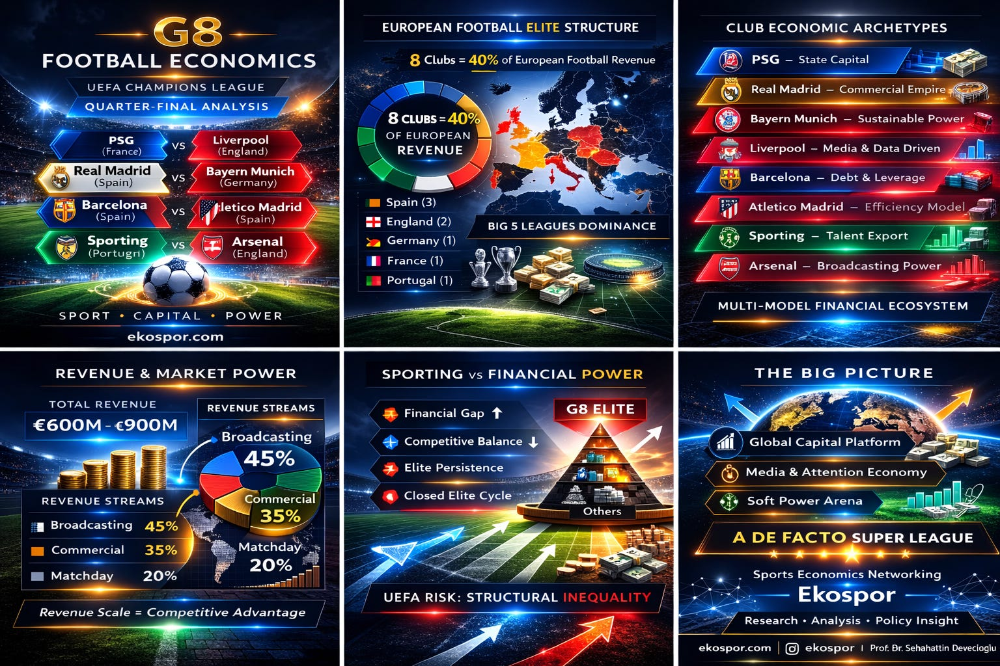

Soccer
G8 Football Economics
UEFA Champions League Quarter-Final Analysis

March 18, 2026
4 min read
1. Structural Concentration in European Football
Recent financial reports by UEFA and Deloitte confirm a growing concentration of economic power in European football.
Key indicators show that:
- The top 10 European clubs generate over €9–10 billion annual revenue
- The quarter-finalist clubs largely overlap with this revenue elite
- The "G8 cluster" represents approximately 35–40% of total European club revenues
📊 According to the UEFA European Club Finance and Investment Landscape Report:
- Revenue inequality between top-tier and mid-tier clubs continues to widen
- Clubs outside top revenue brackets face structural financial constraints
2. Revenue Composition and Financial Scaling
Data from the Deloitte Football Money League highlights three dominant revenue streams:
- Broadcasting revenues: ~40–45%
- Commercial revenues: ~30–40%
- Matchday revenues: ~15–20%
Elite clubs benefit disproportionately from:
- Global media rights distribution
- Sponsorship ecosystems
- International fan monetization
👉 This creates a scale-based competitive advantage, where revenue growth directly reinforces sporting success.
3. Financial Models and Institutional Diversity
Despite similar revenue outcomes, elite clubs operate under distinct financial structures:
- State-backed investment: PSG
- Commercial optimization: Real Madrid, Bayern Munich
- Media-centric scaling: Liverpool, Arsenal
- Debt-financed expansion: FC Barcelona
- Efficiency-driven competition: Atlético Madrid
- Talent production/export: Sporting CP
📌 However, UEFA data indicates convergence toward: → Revenue maximization + global market integration
4. Competitive Balance and Financial Determinism
Empirical evidence suggests increasing financial determinism in sporting outcomes:
- Clubs with the highest revenues have a significantly higher probability of reaching advanced tournament stages (quarter-finals and beyond)
- Repeated participation of the same clubs indicates low competitive mobility
📉 UEFA findings emphasize:
- Competitive balance is weakening across domestic and European competitions
- Financial disparities translate into persistent elite dominance
5. Systemic Risks and Governance Implications
From a regulatory perspective, several risks emerge:
- Structural inequality within UEFA competitions
- Limited upward mobility for smaller clubs
- Growing dependence on external capital and media revenues
📊 UEFA reports highlight that:
- Wage-to-revenue ratios remain high among elite clubs
- Financial sustainability is increasingly linked to continuous revenue growth
6. Strategic Transformation of European Football
The UEFA Champions League is evolving beyond a sporting competition into:
- A global capital distribution mechanism
- A media-driven entertainment platform
- A soft power and geopolitical instrument
This transformation aligns with broader trends in the global sports economy.
⚠️ Policy Insight
Based on UEFA and Deloitte data, European football is structurally evolving toward:
A de facto Super League model, characterized by economic concentration without formal institutional change.
Conclusion
The integration of:
- Capital concentration
- Global broadcasting markets
- Data-driven fan economies
is redefining football as a platform-based economic system.
In this context, clubs function as:
Hybrid entities combining sport, media, and capital markets
References
- UEFA European Club Finance and Investment Landscape Report
- Deloitte Football Money League
- UEFA
- Deloitte
#Soccer
#FootballEconomics
#UEFA
#ChampionsLeague
#SportsEconomics
#Deloitte
#CompetitiveBalance